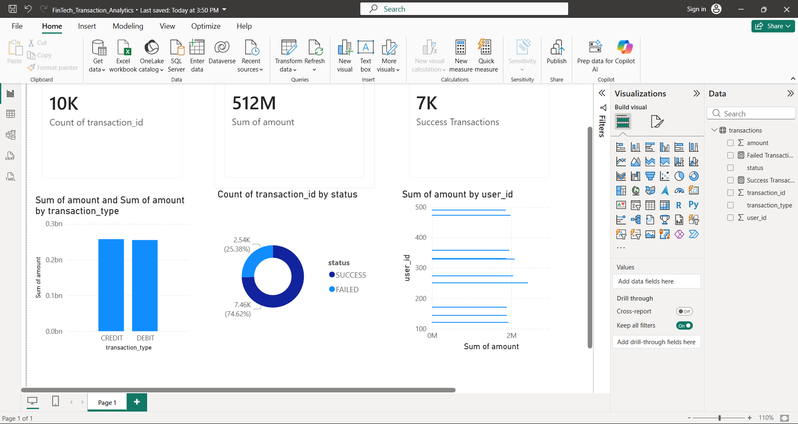

Project Architecture

PostgreSQL →
Debezium CDC →
Apache Kafka →
Apache Spark →
Delta Lake →
Power BI
Real-Time Financial Transaction Analytics Pipeline
CDC Financial Ledger is a real-time financial transaction analytics platform built using PostgreSQL, Debezium CDC, Apache Kafka, Apache Spark, Delta Lake, Docker, and Power BI.
Transactions
Transaction Volume
Success Rate
Failure Rate

